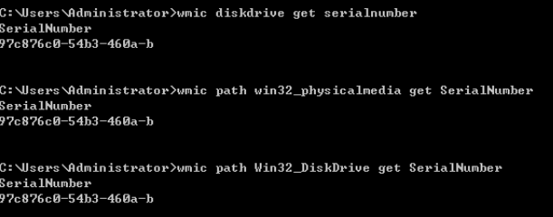
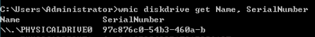
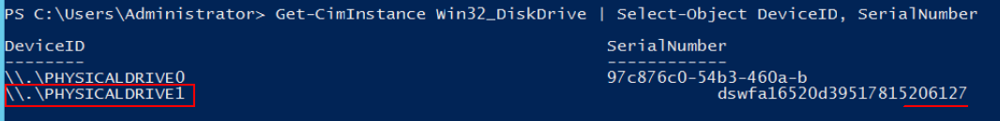

Scenarios
You find that the disk name displayed on the ECS OS is different from that displayed on the management console and you cannot determine which disk name is correct. This section describes how to obtain the disk name used on an ECS OS according to the device identifier on the console.
Obtaining the Disk ID of an ECS on the Console
- Log in to the management console.
- Under Computing, click Elastic Cloud Server.
- Click the target ECS name in the ECS list.
- Click the Disks tab and then to expand the disk information.
- Check the device type and ID of the disk.

If Device Identifier is not displayed on the web page, stop the ECS and restart it.
- KVM
- If Device Type is VBD, use a serial number or BDF to obtain the disk device name.
If you use a serial number (recommended) to obtain the disk name, see Using a Serial Number to Obtain the Disk Name (Windows) and Using a Serial Number to Obtain a Disk Device Name (Linux).
If you use a BDF to obtain the disk device name, see Using a VBD to Obtain a Disk Device Name (Linux). (BDF cannot be used to obtain the disk name of Windows ECSs.)
- If Device Type is SCSI, use a WWN to obtain the disk name. For details, see Using a WWN to Obtain the Disk Name (Windows) and Using a WWN to Obtain a Disk Device Name (Linux).
- If Device Type is VBD, use a serial number or BDF to obtain the disk device name.
- KVM
Using a Serial Number to Obtain the Disk Name (Windows)
If a serial number is displayed on the console, use either of the following methods to obtain the disk name.
cmd
- Start cmd in a Windows OS as an administrator and run either of the following commands:
wmic diskdrive get serialnumber
wmic path win32_physicalmedia get SerialNumber
wmic path Win32_DiskDrive get SerialNumber
A serial number is the first 20 digits of a disk UUID.
For example, if the serial number of a VBD disk on the console is 97c876c0-54b3-460a-b, run either of the following commands to obtain the serial number of the disk on the ECS OS:
wmic diskdrive get serialnumber
wmic path win32_physicalmedia get SerialNumber
wmic path Win32_DiskDrive get SerialNumber
Information similar to the following is displayed:
Figure 1 Obtaining the disk serial number
 - Run the following command to check the disk corresponding to the serial number:
wmic diskdrive get Name, SerialNumber
Figure 2 Checking the disk corresponding to the serial number

PowerShell
- Start PowerShell as an administrator in a Windows OS.
- Run the following command to check the disk on which the logical disk is created:
- Windows Server 2012 or later
- Run the following command to check the disk on which the logical disk is created:
Get-CimInstance -ClassName Win32_LogicalDiskToPartition |select Antecedent, Dependent |fl
As shown in Figure 3, the disk is Disk 0.
- Run the following command to view the mapping between the serial number and the disk:
Get-Disk |select Number, SerialNumber
As shown in Figure 3, the disk is Disk 0.
- Run the following command to check the disk on which the logical disk is created:
- Versions earlier than Windows 2012
- Run the following command to check the disk on which the logical disk is created:
Get-WmiObject -Class Win32_PhysicalMedia |select Tag, Serialnumber
- Run the following command to view the mapping between the serial number and the disk:
Get-WmiObject -Class Win32_LogicalDiskToPartition |select Antecedent, Dependent |fl
- Run the following command to check the disk on which the logical disk is created:
- Windows Server 2012 or later
Using a Serial Number to Obtain a Disk Device Name (Linux)
If a serial number is displayed on the console, run either of the following commands to obtain the device name.
# udevadm info --query=all --name=/dev/xxx | grep ID_SERIAL
# ll /dev/disk/by-id/*
A serial number is the first 20 digits of a disk UUID.
For example, if the serial number of the VBD disk is 62f0d06b-808d-480d-8, run either of the following commands:
# udevadm info --query=all --name=/dev/vdb | grep ID_SERIAL
# ll /dev/disk/by-id/*
The following information is displayed:
[root@ecs-ab63 ~]# udevadm info --query=all --name=/dev/vdb | grep ID_SERIAL E: ID_SERIAL=62f0d06b-808d-480d-8 [root@ecs-ab63 ~]# ll /dev/disk/by-id/* lrwxrwxrwx 1 root root 9 Dec 30 15:56 /dev/disk/by-id/virtio-128d5bfd-f215-487f-9 -> ../../vda lrwxrwxrwx 1 root root 10 Dec 30 15:56 /dev/disk/by-id/virtio-128d5bfd-f215-487f-9-part1 -> ../../vda1 lrwxrwxrwx 1 root root 9 Dec 30 15:56 /dev/disk/by-id/virtio-62f0d06b-808d-480d-8 -> ../../vdb
/dev/vdb is the disk device name.
Using a VBD to Obtain a Disk Device Name (Linux)
- Run the following command to use a BDF to obtain the device name:
ll /sys/bus/pci/devices/BDF disk ID/virtio*/block
For example, if the BDF disk ID of the VBD disk is 0000:02:02.0, run the following command to obtain the device name:
ll /sys/bus/pci/devices/0000:02:02.0/virtio*/block
The following information is displayed:
[root@ecs-ab63 ~]# ll /sys/bus/pci/devices/0000:02:02.0/virtio*/block total 0 drwxr-xr-x 8 root root 0 Dec 30 15:56 vdb
/dev/vdb is the disk device name.
Using a WWN to Obtain the Disk Name (Windows)
- Obtain the device identifier on the console by referring to Obtaining the Disk ID of an ECS on the Console.
- Manually convert the WWN.
For example, the obtained WWN (device identifier) is 688860300003252ffa16520d39517815.
- Obtain the 21st to 17th digits that are counted backwards (3252f).
- Convert a hexadecimal (3252f) to a decimal (206127).
- Start PowerShell as an administrator in a Windows OS.
- Run the following command:
Get-CimInstance Win32_DiskDrive | Select-Object DeviceID, SerialNumber
- In the command output, the disk whose serial number ends with 206127 is the disk corresponding to the WWN.Figure 4 Disk with the serial number ending with 206127

Using a WWN to Obtain a Disk Device Name (Linux)
- Log in to the ECS as user root.
- Run the following command to view the disk device name:
ll /dev/disk/by-id |grep WWN|grep scsi-3
For example, if the WWN obtained on the console is 6888603000008b32fa16688d09368506, run the following command:
ll /dev/disk/by-id |grep 6888603000008b32fa16688d09368506|grep scsi-3
The following information is displayed:
[root@host-192-168-133-148 block]# ll /dev/disk/by-id/ |grep 6888603000008b32fa16688d09368506 |grep scsi-3 lrwxrwxrwx 1 root root 9 May 21 20:22 scsi-36888603000008b32fa16688d09368506 -> ../../sda